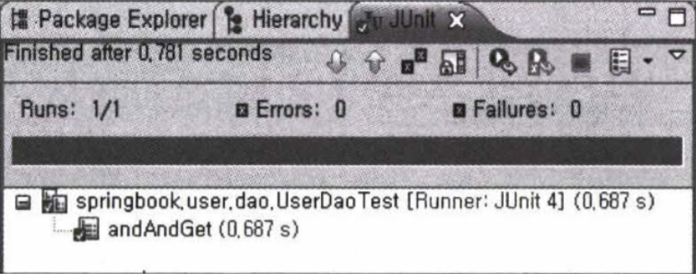
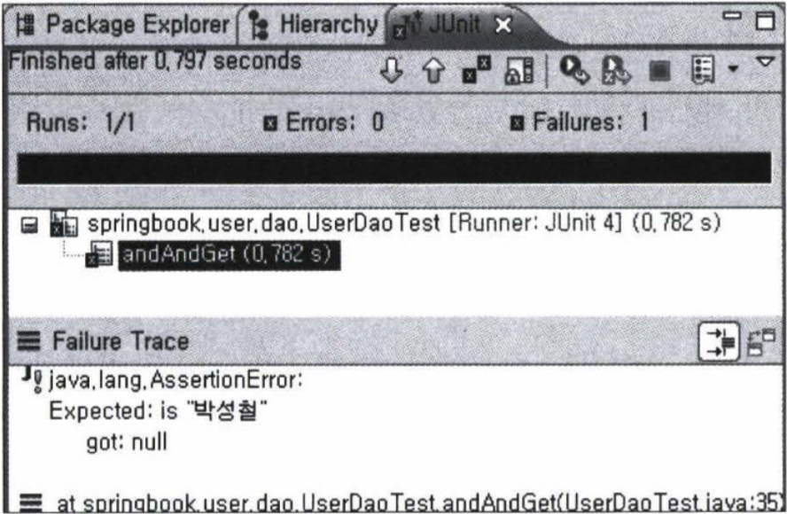

2장 테스트
Created by Yeongmin Kim
LIST
2.1 USERDAOTEST 다시 보기
2.2 USERDAOTEST 개선
2.3 개발자를 위한 테스팅 프레임워크 JUNIT
2.4 스프링 테스트 적용
2.5 학습 테스트로 배우는 스프링
2.6 정리
2.1 UserDaoTest 다시 보기
2.1.1 테스트의 유용성
1장에서 UserDao의 클래스를 책임에 따라 이리저리 분리하고, 인터페이스를 도입하고, 오브젝트 팩토리를 통해 생성하도록 만들고, 또 스프링의 DI 방식을 XML 설정 파일까지 써서 적용했을 때 그것이 처음과 동일한 기능을 수행함을 보장해줄 수 있는 방법에는 어떤 것이 있겠는가?
2.1.2 UserDaoTest의 특징
public class UserDaoTest {
public static void main(String[] args) throws ClassNotFoundException, SQLException {
ApplicationContext context = new GenericXmlApplicationContext("applicationContext.xml");
UserDao dao = context.getBean("userDao", UserDao.class);
User user = new User();
user.setId("Triumph");
user.setName("김영민");
user.setPassword("married");
dao.add(user);
System.out.println(user.getId() + "등록성공");
User user2 = dao.get(user.getId());
System.out.println(user2.getName());
System.out.println(user2.getPassword());
System.out.println(user2.getId() + "조회 성공");
}
}- 자바에서 가장 손쉽게 실행 가능한 main() 메소드
- UserDao의 오브젝트를 가져와서 메소드를 호출한다.
- 테스트에 사용할 입력 값(User 오브젝트)을 직접 코드에서 만들어 넣어준다.
- 테스트의 결과를 콘솔에 출력한다.
- 각 단계의 작업이 에러 없이 끝나면 콘솔에 성공 메시지로 출력해준다.
- DAO에 대한 테스트를 하는데도 서비스 클래스, 컨트롤러, JSP 뷰 등 모든 레이어 기능을 다 만들고 나서야 테스트가 가능하다.
- 테스트를 하는 중에 에러가 나거나 테스트가 실패했다면 과연 어디에서 문제가 발생했는지를 찾아내야 하는 수고도 필요하다.
- 폼을 띄우고 값을 입력하고 등록하는 버튼을 눌렀을 경우 실패하는 원인은 너무나도 다양하다.
- 테스트는 가능하면 작은 단위로 쪼개서 집중해서 할 수 있어야 한다. 관심사의 분리라는 원리가 여기에도 적용된다.
- UserDaoTest는 한 가지 관심에 집중할 수 있게 작은 단위로 만들어진 테스트다.(JSP 서블릿에서 에러가 발생해서 그것을 찾으려고 시간 낭비할 필요가 없다.)
- 작은 단위의 코드에 대해 테스트를 수행한 것을 단위테스트(unit test)라고 한다.
- UserDaoTest는 DB의 상태를 비우고 재시작해야하는 부분이 있어 단위 테스트로서 가치가 없어진다. 통제할 수 없는 외부의 리소스에 의존하는 테스트는 단위 테스트가 아니라고 보기도 한다.
- 단위 테스트를 하는 이유는 개발자가 설계하고 만든 코드가 원래 의도하는대로 동작하는지 개발자 스스로 빨리 확인하고 명확하게 하기 위함이다. 그래서 작은 단위로 테스트하는 것이 편리하다.
- UserDaoTest는 자바 클래스의 main() 메소드를 실행하는 가장 간단한 방법만으로 테스트의 전 과정이 자동으로 진행된다.
- 이렇게 테스트는 자동으로 수행되도록 코드로 만들어지는 것이 중요하다.
지속적인 개선과 점진적인 개발을 위한 테스트
- 1장에서의 초난감 DAO 코드를 UserDaoTest를 이용하여 점진적으로 단위 테스트로 개선했다.
- 테스트를 이용하면 새로운 기능도 기대한 대로 동작하는지 확인할 수 있을 뿐만 아니라, 기존에 만들어 뒀던 기능들이 새로운 기능을 추가하느라 수정한 코드에 영향을 받지 않고 여전히 잘 동작하는지를 확인할 수도 있다.
2.1.3 UserDaoTest의 문제점
- 수동 확인 작업의 번거로움
- 여전히 사람의 눈으로 확인하는 과정이 필요함
- add()에서 User정보를 db에 등록하고, 이를 다시 get()을 이용해 가져왔을 때 입력한 값과 가져온 값이 일치하는지를 테스트코드는 확인해주지 않는다.
- 실행 작업의 번거로움
- 아무리 간단한 main() 메소드라고 하더라도 매번 그것을 실행하는 것은 번거롭다.
2.2 UserDaoTest 개선
2.2.1 테스트 검증의 자동화
add()에 전달한 User 오브젝트에 담긴 사용자 정보와 get()을 통해 다시 DB에 가져온 User 오브젝트의 정보가 서로 정확히 일치하는가를 확인해보도록 합니다.
System.out.println(user2.getName());
System.out.println(user2.getPassword());
System.out.println(user2.getId() + "조회 성공");
수정 후 테스트 코드
if (!user.getId().equals(user2.getId())) {
System.out.println("테스트 실패 (Id)");
} else if (!user.getPassword().equals(user2.getPassword())) {
System.out.println("테스트 실패 (Password)");
} else if (!user.getName().equals(user2.getName())) {
System.out.println("테스트 실패 (Name)");
} else {
System.out.println("조회테스트 성공");
}UserDaoTest가 실패하는 것을 보고싶다면 get()메소드 안의 코드를 하나쯤 강제로 코멘트 처리하고 다시 테스트를 돌려보면 된다.
2.2.2 테스트의 효율적인 수행과 결과 관리
- main() 메소드를 이용한 태스트 작성 방법만으로는 애플리케이션 규모가 커지고 태스트 개수가 많아지면 태스트를 수행히는 일이 점점 부담이 될 것이다.
- 프로그래머를 위한 자바 태스팅 프레임워크라고 불리는 JUnit은 자바 개발 자라면 한 번쯤 들어봤거나 사용해봤을 유명한 테스트 지원 도구다.
- 프레임워크에서 동작하는 코드는 IOC에 의해 main() 메소드도 필요 없고 오브젝트를 만들어서 실행시키는 코드를 만들 필요도 없다.
테스트 메소드 전환
- 새로 만들 테스트는 JUnit 프레임 워크가 요구하는 조건 두가지를 따라야 한다.
- 메소드가 public으로 선언돼야 한다.
- 메소드에 @Test라는 애노테이션을 붙여주는 것이다.
import org.junit.Test;
...
public class UserDaoTest {
@Test
public void addAndGet() throws SQLException {
//JUnit 테스트 메소드는 반드시 public으로 선언돼야 한다.
ApplicationContext context = new ClassPathXmlApplicationContext("applicationContext.xml");
UserDao dao = context.getBean("userDao", UserDao.class);
...
}
}- JUnit은 전통적으로 public 메소드만을 테스트 메소드로 허용 하고 있다. 마지막으로 @Test 애노테이션을 붙여주면 된다.
테스트의 결과를 검증하는 if/else 문장을 JUnit이 제공하는 방법을 이용해 전환해보자.
- assertThat() 메소드는 첫 번째 파라미터의 값을 뒤에 나오는 매처(matcher)라고 불리는 조건으로 비교해서 일치하면 넘어가고 아니면 테스트가 실패하도록 만들어 준다.
- is()는 매처의 일종으로 equals()로 비교해주는 기능을 가졌다.
- JUnit은 예외가 발생하거나 assertThat()에서 실패하지 않고 태스트 메소드의 실행 이 완료되면 테스트가 성공했다고 인식한다.
junit
junit
4.12
test
//UserDaoTest
import static org.hamcrest.CoreMatchers.is;
import static org.junit.Assert.assertThat;
...
public class UserDaoTest {
@Test
public void addAndGet() throws SQLException {
ApplicationContext context = new ClassPathXmlApplicationContext("applicationContext.xml");
UserDao dao = context.getBean("userDao", UserDao.class);
...
assertThat(user2.getId(), is(user.getId()));
assertThat(user2.getName(), is(user.getName()));
assertThat(user2.getPassword(), is(user.getPassword()));
}
//JUnit을 이용해 테스트를 실행해주는 main() 메소드
public static void main(String[] args) {
JUnitCore.main("springbook.user.UserDaoTest");
}
}이 클래스를 실행하면 다음과 같은 메시지가 출력될 것이다.
JUnit version 4.7
Time: 0.578
OK (1 test)만약 코드에 이상이 있어서 assertThat()의 검증에서 실패하면 다음과 같은 메시지가 나올 것이다.
Time: 1.094
There was 1
failure:
1) addAndGet(springbook.dao.UserDaoTest)
java.lang.AssertionError: Expected: is 김영민”
got: null
...
at springbook.dao .UserDaoTest.main(UserDaoTest .iava:36)
FAILURES!!!
Tests run: 1. Failures: 1 - 테스트가 실패하면 OK 대신 FAILURES!!라는 내용이 출력되고, 총 수행한 테스트 중에서 몇 개의 테스트가 실패했는지 보여준다.
- assertThat()은 기대한 결과가 아니면 AssertionError를 던진다.
2.3.1 JUnit 테스트 실행 방법
IDE- 이클립스 run 메뉴의 Run As 항목 중에서 JUnit Test를 선택하면 테스트가 자동으로 실행된다.
- JUnitCore를 이용할 때처럼 main() 메소드를 만들지 않아도 된다.
- 이클립스 Junit 테스트 결과 
출처 : 토비의 스프링 3.1 Vol.1
- 테스트가 실패하면 Failure Trace 항목에 자세하게 나온다.
- 이클립스 Junit 테스트 결과 
- JUnitCore를 사용해 테스트를 실행하는 것보다 훨씬 편리하다.
출처 : 토비의 스프링 3.1 Vol.1
여러 개발자가 만든 코드를 모두 통합해서 테스트를 수행해야 할 때도 있다.
이때는 빌드 스크립트를 이용해 JUnit 테스트를 실행하고 그 결과를 메일 등으로 통보받는 방법을 사용하면 된다.
2.3.2 테스트 결과의 일관성
UserDaoTest 실행 전에 DB의 USER 테이블 데이터를 모두 삭제해주는 불편함이 있었다.
테스트는 항상 동일한 결과를 나타내야 한다는 원칙에 따라서 코드를 개선해보자.
- deleteAll()
- USER 테이블의 모든 레코드를 삭제
public void deleteAll() throws SQLException {
Connection c = dataSource.getConnection();
PreparedStatement ps = c.prepareStatement("delete from tbl_users");
ps.executeUpdate();
ps.close();
c.close();
}- getCount()
- User 테이블의 레코드 개수를 돌려준다.
public int getCount() throws SQLException {
Connection c = dataSource.getConnection();
PreparedStatement ps = c.prepareStatement("select count(*) from tbl_users");
ResultSet rs = ps.executeQuery();
rs.next();
int count = rs.getInt(1);
rs.close();
ps.close();
c.close();
return count;
}독립 테스트 보다는 연결성이 있어 기존 addAndGet() 테스트를 확장하는 방법을 사용하는 편이 낫다.
deleteAll() 직후에 0이 나오고 add() 직후에는 1이 나온다면 getCount()의 기능이 바르게 동작한다고 볼 수 있다.
deleteAll() 직후에 항상 0이 나오는 것을 보고 deleteAll()의 기능도 바르게 동작한다고 생각할 수 있다.
- deleteAll()과 getCount()가 추가된 addAndGet() 테스트
@Test
public void addAndGet() throws SQLException {
...
dao.deleteAll();
assertThat(dao.getCount(), is(0));
User user = new User();
user.setId("noel");
user.setName("Yeongmin");
user.setPassword("toby");
dao.add(user);
assertThat(dao.getCount(), is(1));
User user2 = dao.get(user.getId());
assertThat(user2.getId(), is(user.getId()));
assertThat(user2.getName(), is(user.getName()));
assertThat(user2.getPassword(), is(user.getPassword()));
}addAndGet() 테스트가 시작될 때 항상 기존의 데이터를 지우고 시작하기 때문에 일관성있는 결과가 나온다.
DB에 남아 있는 데이터와 같은 외부 환경에 영향을 받지 말아야 하는 것은 물론이고, 테스트를 실행하는 순서를 바꿔도 동일한 결과가 보장되도록 만들어야 한다.
2.3.3 포괄적인 테스트
두 개 이상의 레코드를 add() 했을 때는 getCount()의 실행 결과가 어떻게 될까?
getCount() 테스트- 테스트 시나리오
- User 테이블의 데이터를 모두 지우고 getCount()로 레코드 개수가 0임을 확인
- 3개의 사용자 정보를 하나씩 추가하면서 매번 getCount()의 결과가 하나씩 증가하는지 확인
User 클래스에 여러개의 정보를 넣을 수 있도록 파라미터가 있는 User 클래스 생성자를 만든다.
public User(String id, String name, String password) {
this.id = id;
this.name = name;
this.password = password;
}
public User() {
/*
* 자바빈의 규약에 따르는 클래스에 생성자를 명시적으로 추가했을 때는
* 파라미터가 없는 디폴트 생성자도 함께 정의해주는 것을 잊지 말자.
*
*/
}새로 만든 생성자를 이용하면 addAndGet() 테스트의 코드도 다음과 같이 간략히 수정할 수 있다.
UserDao dao = context.getBean("userDao", UserDao.class);
User user = new User("goyonam", "김영민", "springno1");
...
새로운 getCount()에 대한 테스트 메소드를 작성한다.
@Test
public void count() throws SQLException {
ApplicationContext context = new GenericXmlApplicationContext("applicationContext.xml");
UserDao dao = context.getBean("userDao", UserDao.class);
User user1 = new User("no1", "김영미니니", "spekek");
User user2 = new User("no2", "김영미니니22", "spekek2");
System.out.println(dao.getCount());
dao.deleteAll();
assertThat(dao.getCount(), is(0));
System.out.println(dao.getCount());
dao.add(user1);
assertThat(dao.getCount(), is(1));
System.out.println(dao.getCount());
dao.add(user2);
assertThat(dao.getCount(), is(2));
System.out.println(dao.getCount());
}주의해야 할 점은 JUnit은 특정한 테스트 메소드의 실행 순서를 보장해주지 않는다.
모든 테스트는 실행 순서에 상관없이 독립적으로 항상 동일한 결과를 낼 수 있도록 해야 한다.
addAndGet() 테스트 보완
get()이 파라미터로 주어진 id에 해당하는 사용자를 가져온 것인지, 그냥 아무거나 가져온 것인지 테스트에서 검증하지는 못했다.
User를 하나 더 추가해서 두 개의 User를 add() 하고, 각 User의 id를 파라미터로 전달해서 get()을 실행하도록 만든다.
@Test
public void addAndGet() throws SQLException {
...
UserDao dao = context.getBean("userDao", UserDao.class);
User user1 = new User("goyonam", "김영민", "springno1");
User user2 = new User("goyonam2", "김영민2", "springno2");
dao.deleteAll();
assertThat(dao.getCount(), is(0));
dao.add(user1);
dao.add(user2);
assertThat(dao.getCount(), is(2));
User userget1 = dao.get(user1.getId());
assertThat(userget1.getName(), is(user1.getName()));
assertThat(userget1.getPassword(), is(user1.getPassword()));
User userget2 = dao.get(user2.getId());
assertThat(userget2.getName(), is(user2.getName()));
assertThat(userget2.getPassword(), is(user2.getPassword()));
}
- null과 같은 특별한 값을 리턴
- id에 해당하는 정보를 찾을 수 없다고 예외를 던진다.
스프링의 EmptyResultDataAccessException 예외 사용
존재하지 않는 id로 get()호출.
이때 EmptyResultDataAccessException이 언져지면 성공, 아니면 실패.
@Test(expected = EmptyResultDataAccessException.class) // 테스트 중 발생할 것으로 기대하는 예외클래스
public void getUserFailure() throws SQLException {
ApplicationContext context = new GenericXmlApplicationContext ("applicationContext.xml");
UserDao dao = context.getBean("userDao", UserDao.class);
dao.deleteAll();
assertThat(dao.getCount(), is(0));
dao.get("unknown_id"); // 이 메소드 실행 중에 예외가 발생하지 않으면 테스트가 실패한다.
}
테스트가 성공하도록 get() 메소드 코드를 수정.
UserDao를 수정해서 EmptyResultDataAccessException을 던지는 get() 메소드 생성
public User get(String id) throws SQLException {
...
ResultSet rs = ps.executeQuery();
User user = null; // User는 NULL 상태로 초기화 해놓는다.
if (rs.next()) { // id를 조건으로 한 쿼리의 결과가 있으면 User 오브제를 만들고 값을 넣어준다.
user = new User();
user.setId(rs.getString("id"));
user.setName(rs.getString("name"));
user.setPassword(rs.getString("password"));
}
rs.close();
ps.close();
c.close();
if (user == null) throw new EmptyResultDataAccessException(1);
// 결과가 없으면 User는 null 상태 그대로 일 것이다. 이를 확인해서 예외를 던져준다.
return user;
}2.3.4 테스트가 이끄는 개발
getUserFailure() 테스트에는 만들고 싶은 기능에 대한 조건과 행위, 결과에 대한 내용이 잘 표현되어 있다.
| 단계 | 내용 | 코드 | |
|---|---|---|---|
| 조건 | 어떤 조건을 가지고 | 가져올 사용자 정보가 존재하지 않는 경우에 | dao.deleteAll(); assertThat(dao.getCount(), is(0)); |
| 행위 | 무엇을 할 때 | 존재하지 않는 id로 get()을 실행하면 | get("unknow_id") |
| 결과 | 어떤 결과가 나온다 | 특별한 예외가 던져진다 | @Test(expected= EmptyResultDataAccessException.class) |
만들고자 하는 기능의 내용을 담고 있으면서 만들어진 코드를 검증도 해줄 수 있도록 테스트 코드를 먼저 만들고, 테스트를 성공하게 해주는 코드를 작성하는 방식의 개발 방법을 테스트 주도 개발(TDD:Test Driven Development)이라고 한다.
또는 테스트를 코드보다 먼저 작성한다고 해서 테스트 우선 개발(Test First Development)이라고도 한다.
TDD에서는 테스트를 작성하고 이를 성공시키는 코드를 만드는 작업의 주기를 가능한 한 짧게 가져가도록 권장한다.
2.3.5 테스트 코드 개선
@Beforeimport org.junit.Before;
...
public class UserDaoTest {
private UserDao dao; //setUp() 메소드에서 만드는 오브젝트를 메소드에서 사용할 수 있도록 인스턴스 변수로 선언한다.
@Before // junit 이 제공하는 어노테이션 @Test 메소드가 실행되기 전에 먼저 실행돼야 하는 메소드를 정의
public void setUp() {
ApplicationContext context = new ClassPathXmlApplicationContext("applicationContext.xml");
this.dao = context.getBean("userDao", UserDao.class);
}
...
@Test
public void addAndGet() throws SQLException {
... // 각 테스트 메소드에 반복적으로 나타났던 코드를 제거하고 별도의 메소드로 옮긴다.
}
}- 테스트 클래스에서 @Test가붙은 public이고 void형이며 파라미터가 없는 테스트 메소드를모두찾는다.
- 테스트 클래스의 오브젝트를 하나 만든다.
- @Before가 붙은 메소드가 있으면 실행한다.
- @Test가 붙은 메소드를 하나 호출하고 테스트 결과를 저장해둔다.
- @After가 붙은 메소드가 있으면 실행한다.
- 나머지 테스트 메소드에 대해 2~5변을 반복한다.
- 모든 테스트의 결과를 종합해서 돌려준다.
서로 주고 받을 정보나 오브젝트가 있다면 인스턴스 변수를 이용해야 한다.
각 테스트 메소드를 실행할 때마다 테스트 클래스의 오브젝트를 새로 만든다.

출처 : 토비의 스프링 3.1 Vol.1
정리
- 테스트는 자동화돼야 하고, 빠르게 실행할 수 있어야 한다.
- main() 테스트 대신 JUnit 프레임워크를 이용한 테스트 작성이 편하다.
- 테스트 결과는 일관성이 있어야 한다. 코드의 변경 없이 환경이나 테스트 실행 순서에 따라서 결과가 달라지면 안 된다.
- 테스트는 포괄적으로 작성해야 한다. 충분한 검증을 하지 않는 테스트는 없는 것보다 나쁠 수 있다.
- 코드 작성과 테스트 수행의 간격이 짧은수록 효과적이다.
- 테스트를 먼저 만들고 테스트를 성공시키는 코드를 만들어가는 테스트 주도 개발 방법(TDD)도 유용하다.
- @Before, @After를 사용해서 테스트 메소드들의 공통 준비 작업과 정리 작업을 처리할 수 있다.
- 스프링 테스트 컨텍스트 프레임워크를 이용하면 테스트의 성능을 향상시킬 수 있다.
- 동일한 설정파일을 사용하는 테스트는 하나의 애플리케이션 컨텍스트를 공유한다
- @Autowired를 사용하면 컨텍스트의 빈을 테스트 오브젝트에 DI 할 수 있다.
- 기술의 사용 방법을 익히고 이해를 돕기 위해 학습 테스트를 작성하자.
- 오류가 발견될 경우 그에 대한 버그 테스트를 만들어 두면 유용하다.